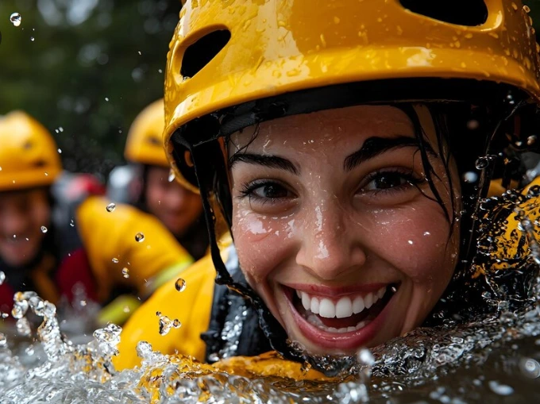

Mission:
To provide exhilarating and safe whitewater rafting adventures that connect our guests with nature, create unforgettable memories, and inspire a lifelong passion for outdoor exploration.
Vision:
To be the leading adventure tourism provider, recognized globally for sustainable practices, exceptional customer experiences, and fostering environmental stewardship through thrilling water expeditions.
Motto:
"Ride the Rapids, Embrace the Adventure!"
Creed:
We believe in the power of adventure to transform lives, the responsibility to protect the rivers we cherish, and the joy of sharing the wild beauty of nature with everyone who dares to paddle with us.